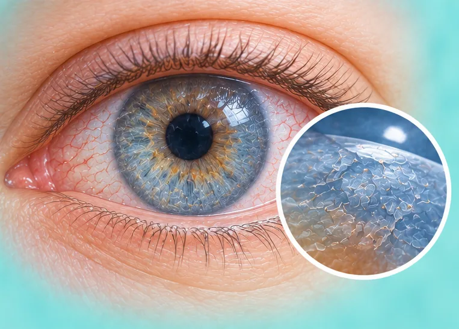
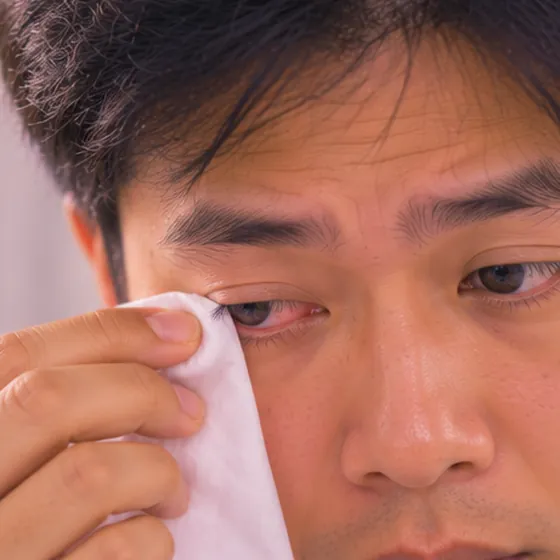

Saluran air mata tersumbat
Saluran kecil yang mengalirkan air mata dari mata tersumbat
Apa itu
Air mata tidak dapat mengalir keluar dengan baik, jadi mata sering berair, dan kadang-kadang melekit atau berjangkit. Ia biasa pada bayi dan juga orang dewasa.
- Penjuru dalam mata
- Bayi dan orang dewasa
- Mata berair dan melekit
- Jumpa doktor
- Doktor mata (pakar oftalmologi); pakar pediatrik untuk bayi
- Biasa pada
- Bayi baru lahir; orang dewasa, terutamanya wanita yang lebih berumur
- Berjangkit
- Tidak, tetapi jangkitan mata yang menyertainya boleh merebak melalui sentuhan
- Perjalanan
- Pada bayi ia selalunya hilang sendiri dalam beberapa bulan pertama; orang dewasa mungkin perlu berjumpa doktor
Tanda biasa
Mata berairEpifora 
Mata merah dan melekitLelehan mata Penglihatan kaburPenglihatan kabur
Tanda-tanda lain
- Kemerahan atau bengkak berhampiran penjuru dalam mata
Mengapa ia berlaku
Wujud sejak lahirKongenital 
Peningkatan usiaPenuaan
Punca lain
- Jangkitan mata, hidung atau sinus atau radang berpanjangan
- Kecederaan pada hidung atau muka, atau ketumbuhan yang menekan saluran
Jumpa doktor dahulu jika
- Bengkak merah, panas dan sakit di penjuru dalam mata, terutamanya dengan demam
- Bayi yang demam atau sangat tidak sihat: berjumpa doktor dengan segera
- Bengkak dan kemerahan merebak ke kelopak mata atau pipi
- Sakit mata, cahaya menyakitkan mata, atau perubahan penglihatan
- Darah dalam air mata, atau ketulan berhampiran penjuru dalam mata
Jika mana-mana berkenaan, sila jumpa doktor sebelum sesi.
Halaman ini ialah maklumat am. Sila terus mengambil ubat biasa anda dan terus berjumpa doktor.
Teruskan mengambil ubat biasa anda dan terus berjumpa doktor. Sesi kami ialah sokongan lembut dan tidak menggantikan rawatan perubatan.
Menjaga diri

Kerap basuh tanganKebersihan tangan 
Tanya ahli farmasiNasihat ahli farmasi
Lebih banyak cara menjaga diri
- Lap tahi mata dengan lembut menggunakan kapas lembap yang bersih, satu kali lap setiap kapas
- Jangan gosok mata dan jangan kongsi tuala
- Untuk bayi, tanya doktor sebelum mengurut lembut di sebelah hidung
Beritahu ahli terapi anda
- Demam atau jangkitan aktif
- Alahan teruk
- Kulit luka, merah atau sakit
Ahli terapi anda akan menyemaknya bersama anda sebelum bermula.
Soalan dan jawapan
Apakah Saluran air mata tersumbat?
Saluran kecil yang mengalirkan air mata dari mata tersumbat. Air mata tidak dapat mengalir keluar dengan baik, jadi mata sering berair, dan kadang-kadang melekit atau berjangkit. Ia biasa pada bayi dan juga orang dewasa.
Apakah tanda biasa Saluran air mata tersumbat?
Mata berair · Mata merah dan melekit · Penglihatan kabur
Mengapa Saluran air mata tersumbat berlaku?
Wujud sejak lahir · Peningkatan usia
Bagaimana menjaga diri dengan Saluran air mata tersumbat?
Kerap basuh tangan · Tanya ahli farmasi
Bolehkah sesi AI Body Master membantu Saluran air mata tersumbat?
Sesi ialah sokongan meridian tanpa jarum yang lembut untuk kesejahteraan anda. Ia tidak merawat atau menyembuhkan Saluran air mata tersumbat dan tidak menggantikan ubat atau doktor anda. Beritahu ahli terapi anda sebelum sesi bermula.
Keadaan berkaitan
- Katarak
- Konjunktivitis virus (mata merah)
- Bintik terapung di mata (kekeruhan vitreus)
- Bulu mata tumbuh ke dalam (trikiasis)
- Bintik terapung di mata
- Penglihatan berganda (diplopia)
- Mata kering
- Rabun jauh teruk (miopia tinggi)
- Penyakit Alzheimer
- Dermatitis seboroik (ruam jenis kelemumur)
- Bibir mengelupas (keilitis eksfoliatif)
- Keratosis tonsil
Rujukan: General information based on public health sources such as Mayo Clinic, NHS, Cleveland Clinic and NCBI StatPearls.
Halaman dikemas kini: 2026-11-01